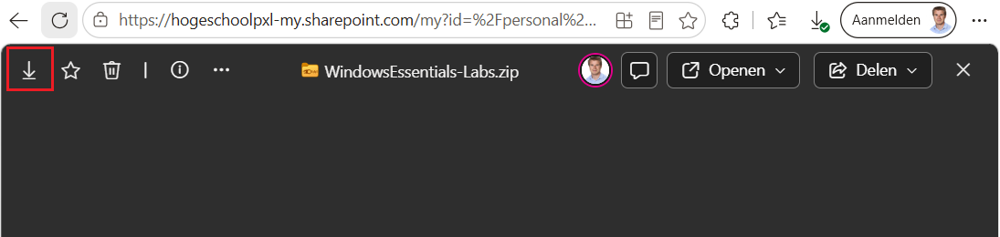
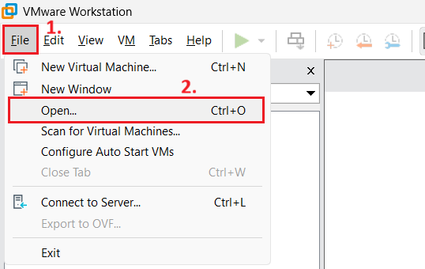
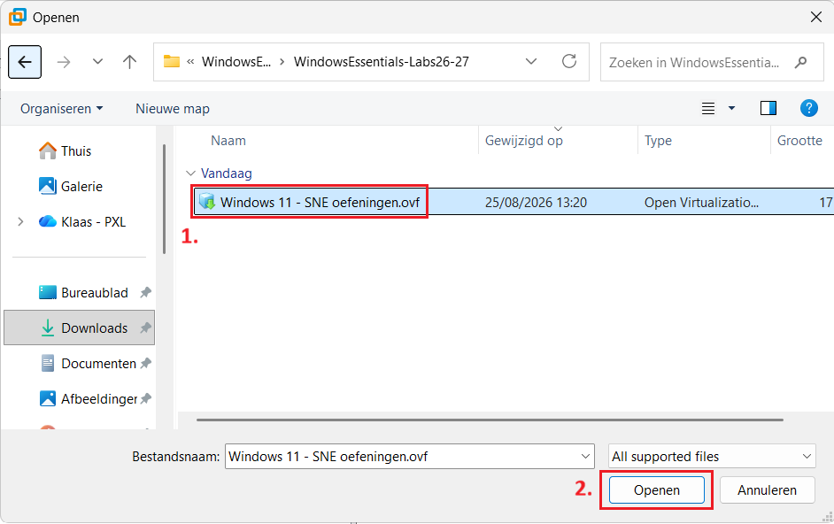
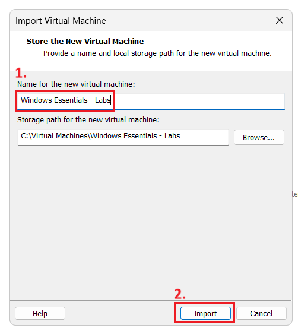
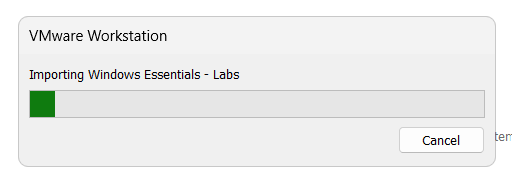
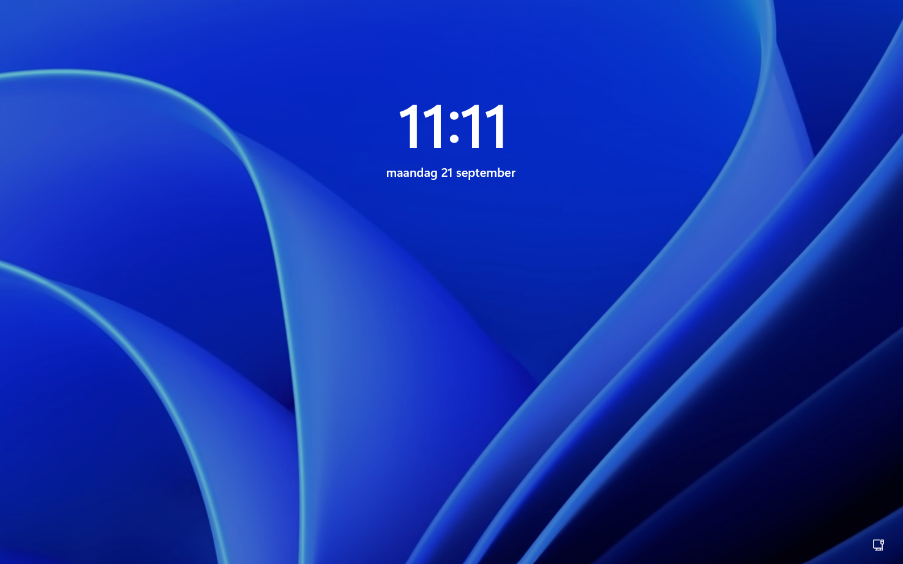
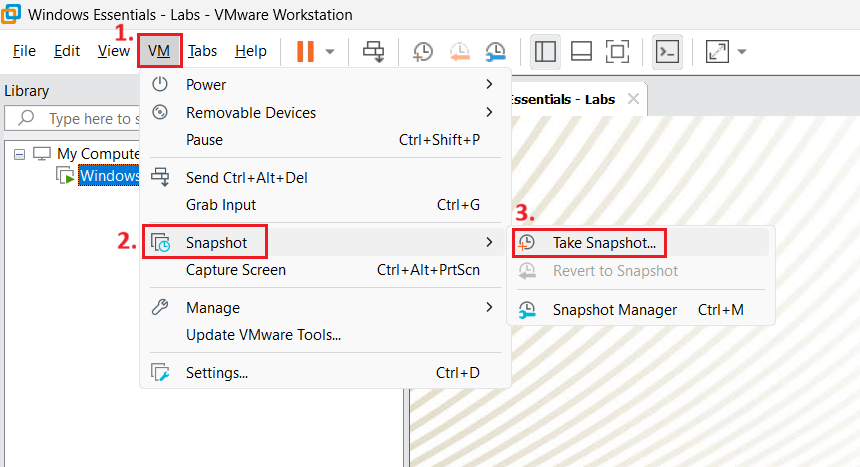
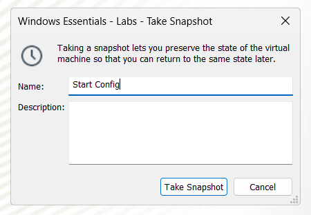

Virtuele machine voor de labo's importeren
Tijdens de eerste lesweken werken we met een vooraf geconfigureerde virtuele machine. In de eerste drie hoofdstukken gebruiken we deze virtuele machine voor het uitvoeren van labo’s en oefeningen.
Volg de onderstaande stappen om de virtuele machine te importeren in VMware Workstation Pro.
1. De virtuele machine downloaden

- Download de virtuele machine via deze deze link.
- Wacht tot het ZIP-bestand volledig is gedownload voordat je verdergaat.
- Pak vervolgens het ZIP-bestand uit. Het uitpakken kan enkele minuten duren.
Opgelet: deze download vereist een internetverbinding. Het kan gebeuren dat de download wordt onderbroken of dat het ZIP-bestand onvolledig wordt gedownload. Start in dat geval de download opnieuw. Soms zijn 3 à 4 pogingen nodig om het ZIP-bestand succesvol te downloaden.
Lukt het na meerdere pogingen nog steeds niet om het ZIP-bestand te downloaden? Spreek dan je vaklector aan. Hij/zij kan het ZIP-bestand via een USB-stick aanleveren.
2. De virtuele machine importeren in VMware Workstation Pro
1. Open VMware Workstation en klik links bovenaan op "File" - "Open"

2. Navigeer naar de map waar je het zip bestand hebt uitgepakt en selecteer het bestand "Windows 11 - SNE Oefeningen.OVF" en kies voor "Openen"

3. Geef de virtuele machine de volgende naam "Windows Essentials - Labs" en klik nadien op de knop "Import"

4. De virtuele machine wordt nu geïmporteerd. Dit kan een aantal minuten duren.

3. De virtuele machine testen
- Als de import voltooid is, dan start je de virtuele machine op.
- Wanneer de virtuele machine succesvol is opgestart zie je onderstaand scherm.

4. Aanmelden
Meld je aan met onderstaande gegevens:
- De aanmeldgegevens van de VM vind je op Blackboard.
5. Snapshot
Tijdens de lessen passen we regelmatig de configuratie van de virtuele machine aan. Om snel terug te kunnen keren naar de oorspronkelijke instellingen, maken we vooraf een snapshot. Met een snapshot kun je de virtuele machine eenvoudig herstellen naar een eerdere staat. Zo hoef je de virtuele machine niet opnieuw te downloaden of te importeren.
5.1. Een snapshot maken
Zorg dat je bent aangemeld op de virtuele machine en dat je het bureaublad ziet.
- Klik bovenaan in het menu op "VM".
- Kies voor "Snapshot".
- Klik nadien op "Take Snapshot".

5.2. Geef de snapshot de naam "Start Config"
